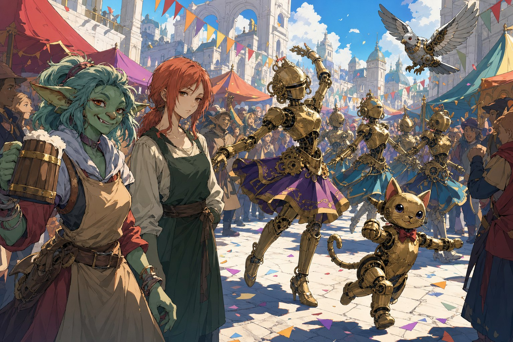
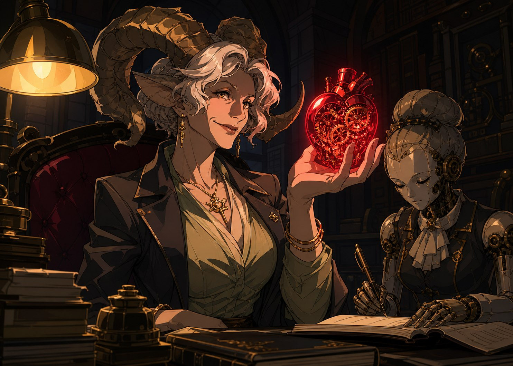
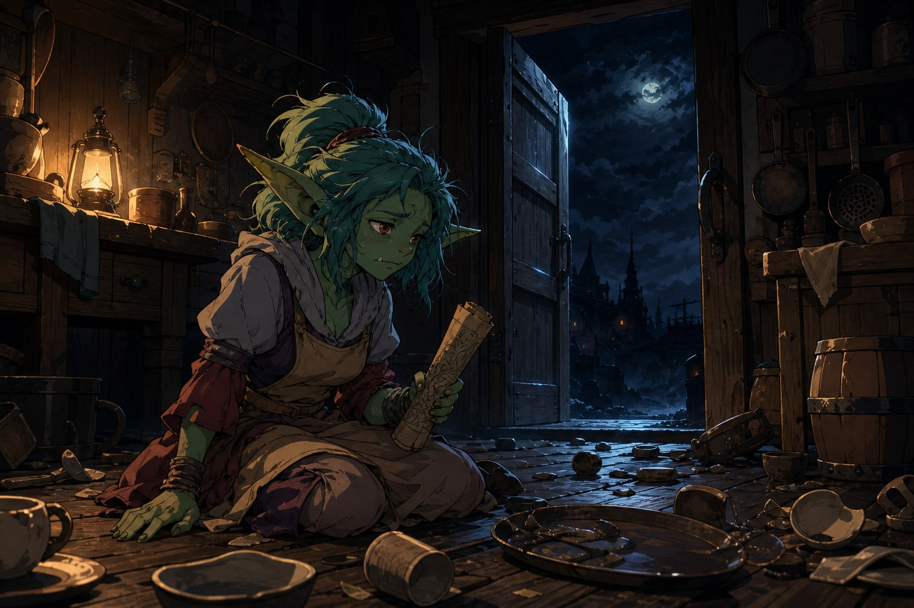

구제국력 849년, 늦가을. 나라의 동쪽 끝에 자리한 브라에스 시의 하얀 석조 광장에 햇살이 가득했다. 돌 분수 주위로 형형색색의 천막이 늘어서고, 상인들은 구운 빵과 단 음료를 팔며 손님을 불렀다. 아이들이 나무 사이를 뛰어다니고 거리 악사들이 북과 피리로 리듬을 맞추는 사이, 알록달록한 깃발을 든 퍼레이드 행렬이 아치형 문 아래로 천천히 들어섰다. 세 이방인은 저마다 그 인파 어딘가에 있었다. 녹티스는 갓 구운 빵 냄새에 이끌려 가판대로 향했고, 공짜 술을 돌리는 고블린에게 잔을 청했다가 새치기를 한 작은 페어리와 실랑이를 벌였다. 판델라는 축제의 흥에 조금도 물들지 않은 채, 오늘도 세상을 왕따시키겠다는 얼굴로 잔만 만지작거렸다.
공짜 맥주를 돌리던 고블린은 스트레가 그린폿이었다. 녹색 얼굴에 웃음이 가득한 여관 주인으로, “오늘은 내가 쏜다!” 하고 외치며 사람들 사이를 신나게 오갔다. 그 곁에는 붉은빛이 살짝 도는 머리의 여성이 읽기 어려운 표정으로 앞치마를 만지작거리며 서 있었다. 스트레가는 그녀의 어깨를 툭툭 치며 일 생각은 그만하고 축제나 즐기라고 잔소리했다. 에일라라 불린 여성은 담담하게 대답했다. “그렇네요. 모두 즐거워보입니다.” 스트레가가 “또 그 표정이야!” 하고 호탕하게 웃으며 음식을 가지러 사라진 사이, 축제의 하이라이트가 등장했다. 맑은 벨소리와 함께 반짝이는 기계 인형 무용단이었다.
축제의 습격
어설프게 춤을 추며 들어온 고양이 인형이 사람들의 감탄을 자아냈다. 클랭크를 본 적은 있어도, 저렇게 완전히 소형화되어 진짜 생물처럼 움직이는 기계는 누구도 처음이었다. 비둘기 인형이 날아올라 광장 위를 돌자 사람들은 숨을 죽인 채 그 광경을 바라보았다. 그때 고양이 인형 하나가 몸을 말아 바퀴처럼 미친 듯이 굴러왔다. 표적은 에일라였다. 스트레가가 어디선가 달려들어 쟁반으로 막아섰지만, 금속과 금속이 부딪히는 소리와 함께 쟁반이 부서지고 인형의 팔 끝이 그녀의 어깨를 깊게 찔렀다. 하얀 돌바닥 위로 스트레가의 피가 뿌려졌고, 음악이 끊기며 사람들이 일제히 비명을 지르며 흩어졌다.
가이드도, 안내자도 없이 세 사람은 처음으로 함께 나섰다. 기계 인형들은 무기를 달고 있는 것이 아니라 그저 중량으로 부딪혀왔고, 생김새는 저마다 달랐지만 하나같이 목 뒤쪽에 정교한 붉은 보석이 노출되어 있었다. 퍼레이드 뒤편에서는 거대한 시계와 거울과 샹들리에가 합쳐진 듯한 무언가가 드르륵 소리를 내며 다가왔다. 자글롬은 레이피어로 날아올라 여러 번 공격을 시도했고, 판델라는 아끼지 않고 이런저런 짐승으로 변신하며 상황을 헤쳐나갔다. 녹티스는 자글롬에게 방어의 마법을 걸어주고, 자글롬은 녹티스를 격려하며 서로를 도왔다. 이상하리만치 뒤늦게 출동한 경비병들이 남은 인형들을 진압했는데, 그 지각의 이유가 시장의 의전을 챙기기 위해서였다는 것을 사람들은 나중에야 알았다.
녹슨 못 여관
부상당한 스트레가와 에일라를 여관까지 데려다준 것이 인연이 되었다. 녹슨 못 여관에는 드워프 치료사 토라스 리프핸드가 있었고, 스트레가와 사사건건 티격태격했다. 스트레가는 에일라가 자리를 비운 틈에 그녀의 사연을 들려주었다. 어느 추운 날, 얇은 옷을 입은 채 여관 앞에 서 있던 여자였다고. 어디서 어떻게 왔는지조차 본인도 기억하지 못했고, 아는 것이라곤 자기 이름 하나뿐이었다고. 스트레가는 그저 목욕물을 데워주고 스튜를 끓여 재워주었을 뿐인데, 다음 날 눈을 뜨니 에일라는 이미 여관 일을 하고 있었다. 성이 없기에 자기 성 그린폿을 주고 동생으로 삼았다는 이야기였다.
곧 여관 문이 열리고 시장의 비서라는 기계 인형이 우아하게 걸어 들어왔다. 클락시였다. 어딘가 챗지피티를 닮은 사근사근하고 능청스러운 말투로 “무엇이든 도와드리겠다”며, 시장 메이퀸 발로가 모험가들에게 보답하고 싶어 한다고 전했다. 세 번이나 당선된 이 도시의 신임받는 시장은, 뜻밖에도 시청이 아닌 지하 집무실에서 그들을 맞았다. 거대한 뿔을 인 장년의 여성 곁에서 자동서기 인형이 부지런히 출납 내역을 적고 있었다. 메이퀸은 인당 두 금전씩을 건네며, 용병을 사거나 군대를 만드는 것보다 모험가들의 호의를 사는 편이 ‘싸다’고 솔직하게 털어놓았다. 그러면서도 자신의 호의만은 진심이라 덧붙이는 그녀에게, 판델라는 눈을 찌푸렸고 녹티스는 오히려 그 계산적인 면모에서 세 번 당선의 이유를 읽었다.

기계 심장
메이퀸이 진짜 하려던 이야기는 따로 있었다. 그녀는 가죽 주머니에서 붉은 보석 같은 물건을 하나 꺼냈다. 기계 심장이었다. 몇 년 전부터 이 도시에 흘러들기 시작한, 기계적이면서 동시에 마법적인 물건. 회로의 발열을 잡는 극소한 냉각 마법과, 맞을 수 없는 기어비를 성립시키는 작은 포탈 마법이 인간의 눈으로는 볼 수조차 없는 크기의 공간에 새겨져 있었다. 이것을 하나 만드는 데 어느 정도의 지식과 공장이 필요할지 가늠조차 되지 않았다. “클랭크는 굉장한 성취지만 이해하고 재현할 수는 있죠. 하지만 이건, 하나하나가 기적입니다.” 그런 힘을 가진 누군가는 이 세계를 지배할 수도, 신이 될 수도 있을 텐데, 그저 이 인형들을 만들어 보급하고 있을 뿐이라고 메이퀸은 말했다. 그리고 오늘의 습격을 통해, 그 기적에도 불확실성이 있음을 알게 되었다고.
메이퀸은 이 도시에 기계 심장을 유통하는 유일한 상인의 이름을 알려주었다. 팔릭스 그린벨트. 출처는 아무도 몰랐다. 그의 창고에 잠입해 비밀을 캐어달라는 부탁이었다. 세 사람이 시 외곽의 창고에 숨어들자, 안쪽 사무실에서는 이미 팔릭스가 의자에 쓰러진 채 입가에 거품을 흘리며 경련하고 있었다. 누군가 그를 독살하고 사무실을 뒤지는 중이었다. 그를 구하자 습격자는 재빨리 달아났고, 목숨을 빚진 팔릭스는 아는 것을 털어놓았다. 자신도 정확한 출처는 모르지만, 세계의 소문에 능통한 상인으로서 소거법을 써보니 이런 물건을 만들 경지에 이를 자는 역사를 통틀어 하나뿐이라는 것. 미친 대마법사 아르카딘. 다만 그는 백스무 해 전에 죽었다고 했다. 그렇다면 죽은 마법사의 기계 심장이 왜 이제야 갑자기 뛰기 시작한 것인가. 팔릭스는 대답할 수 없었지만, 지도 위 한 곳을 짚어주었다. 서쪽의 작은 마을, 린들필드. 그리고 습격자가 노렸던 아르카딘의 낡은 문서 보관 기계 하나를 목숨값이라며 넘겨주었다.

다 타버린 저녁
여관으로 돌아온 세 사람을 에일라가 표정 없이 맞았다. “돌아오셨군요. 어서오세요.” 문서 보관 기계는 페어리의 지식과 조합하니 뜻밖에도 쉽게 열렸다. 안에는 돌돌 말린 엘프어 문서 한 장이 들어 있었다. 엘프어를 배우던 고블린이라며 다들 이상하게 여겼던 스트레가가, 평생 쓸 일 없던 그 지식으로 신이 나서 문서를 읽어 내려갔다. 발행일은 제국력 722년, 백스물일곱 해 전. 발행인은 수석 마법학자 아르카딘. 스트레가의 목소리는 아래로 갈수록 심각해졌다. 1급 피험체의 폐기. 연구소 규약에 따른 폐기 절차. 실험 중 사고로 인한 영구적 신체 손상. 그리고 피험체의 등록명은. 스트레가의 입술이 조금 떨렸다. “에일라 실버하트.”
동명이인이겠지, 백스무 해 전 문서인데 에일라가 엘프일 리는 없으니. 그렇게 웃어넘기려던 스트레가가 주방을 향해 크게 소리쳤다. “에일라!” 대답이 없었다. 달려가 보니 쟁반과 그릇들이 바닥에 뒹굴고, 밖으로 통하는 문이 활짝 열린 채 에일라는 보이지 않았다. 스트레가가 그 자리에 털썩 주저앉았다. 그저 무뚝뚝한 여관 종업원인 줄로만 알았던 사람의 이름이, 어째서 백스무 해도 더 된 폐기 지시서에 적혀 있는가. 그녀는 지금 어디로 사라진 것인가. 그 밤은 그렇게, 답보다 훨씬 많은 물음을 남긴 채 저물었다.